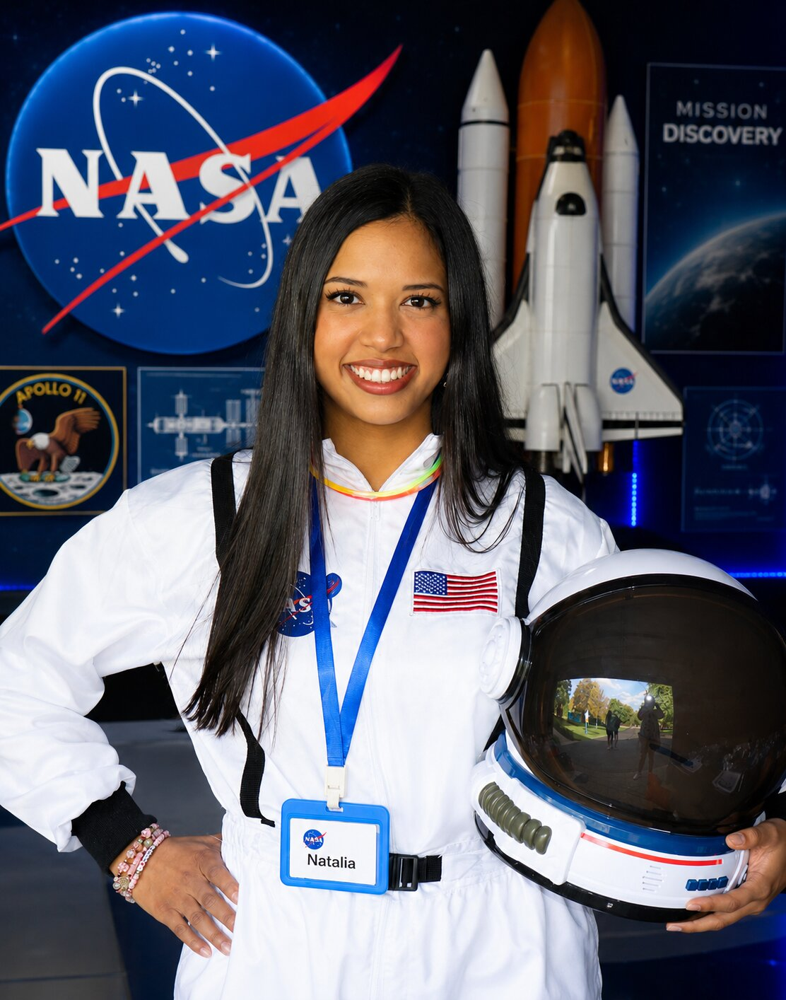

Space research background
Natalia brings real research experience into kid-friendly science experiences.
Meet the creator
The scientist, engineer, and storyteller behind Tiny Clues Science.

About Natalia
Hi! My name is Natalia, and I created Tiny Clues Science to make science feel exciting, real, and possible for children.
I am a Mechanical Engineering student at the University of Illinois Chicago, and I have contributed to cryogenic research for the NASA-funded Terahertz Intensity Mapper mission.
The Terahertz Intensity Mapper is a telescope designed to fly on a helium balloon about the size of a football stadium. Being part of space-related research helped me see how powerful science can feel when it is connected to curiosity, imagination, and discovery.
Tiny Clues Science was created from that same feeling. My goal is for every child to put on a lab coat, try something new, ask questions, and leave feeling proud of what they discovered.
Book a WorkshopNatalia brings real research experience into kid-friendly science experiences.
Every activity is designed to help kids observe, test, build, and think creatively.
Tiny Clues Science is built to feel safe, warm, organized, and memorable for families.